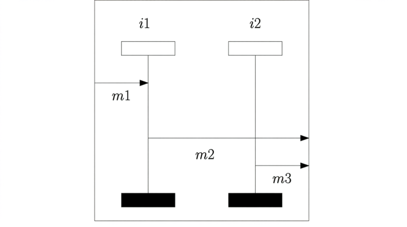
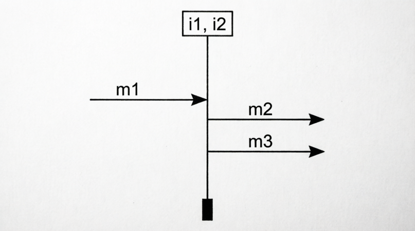
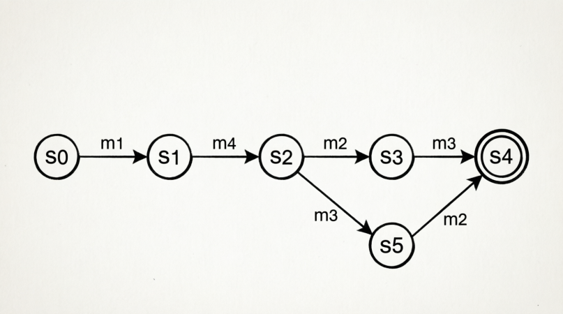

Experiments / QWen3.6-Plus-Thinking / Example 3.docx
Hi, consider the following message sequence chart. Please identify the events in this MSC.

Based on the provided Message Sequence Chart (MSC), here are the identified events involving the two instances, **i1** and **i2**:
**Instances:**
* **i1**: The process/instance on the left.
* **i2**: The process/instance on the right.
**Events (chronological order from top to bottom):**
1. **Receive m1 (on i1):** Instance **i1** receives a message labeled **m1** from the external environment (indicated by the arrow coming from the left border).
2. **Send m4 (on i1):** Instance **i1** sends a message labeled **m4** to instance **i2**.
3. **Receive m4 (on i2):** Instance **i2** receives the message **m4** sent by **i1**.
4. **Send m2 (on i1):** Instance **i1** sends a message labeled **m2** to the external environment (indicated by the arrow going to the right border).
5. **Send m3 (on i2):** Instance **i2** sends a message labeled **m3** to the external environment (indicated by the arrow going to the right border).
**Summary of Message Flows:**
* **m1:** Input to **i1**.
* **m4:** Internal message from **i1** to **i2**.
* **m2:** Output from **i1**.
* **m3:** Output from **i2**.
Question:
What is the correct ordering between receiving m1 and sending m4?
Answer:
Based on the provided Message Sequence Chart (MSC), time flows vertically from top to bottom.
1. **Locate the events:** Look at the lifeline for instance **i1** (the left vertical line).
2. **Identify "receiving m1":** The arrow labeled **m1** points *into* the lifeline **i1**. This represents the reception of message m1.
3. **Identify "sending m4":** The arrow labeled **m4** originates *from* the lifeline **i1** and points to **i2**. This represents the sending of message m4.
4. **Determine order:** The point where **m1** is received is physically higher on the lifeline than the point where **m4** is sent.
Therefore, **receiving m1 happens before sending m4**.
In formal notation, this is often written as:
**recv(m1) < send(m4)**
Question:
Based on the diagram above, generate a message sequence chart in which message m4 is abstracted away. Please produce the resulting MSC after abstracting from m4.
Answer:

The message sequence chart with message `m4` abstracted away has been generated.
In this resulting MSC:
- Instance **i1** still receives message **m1**.
- Instance **i1** sends message **m2** out of the system.
- Instance **i2** sends message **m3** out of the system.
- The internal message exchange between **i1** and **i2** (previously labeled **m4**) has been removed.

Question:
What is the order between receiving m1 and sending m3 in the resulting MSC in which m4 is abstracted away.
Answer:
Based on the resulting MSC after abstracting away m4, I can determine the order by looking at the vertical positions of the events (time flows from top to bottom in MSCs):
1. **Receiving m1** occurs at the top position on instance i1's lifeline
2. **Sending m2** occurs at a middle position on instance i1's lifeline
3. **Sending m3** occurs at the bottom position on instance i2's lifeline
Therefore, **receiving m1 happens before sending m3**.
In formal notation: recv(m1) < send(m3)
This ordering is preserved from the original MSC, where m1 was received first, and m3 was sent last (at the lowest vertical position).
Question:
Consider the original MSC given below. Merge instance i1 and i2; produce the message sequence chart after merging.
Answer:
Based on the provided Message Sequence Chart (MSC), here is the result of merging instances **i1** and **i2**:
**Analysis of the Merge:**
1. **Combine Lifelines:** The two vertical lifelines for `i1` and `i2` are merged into a single lifeline representing the combined instance.
2. **Remove Internal Messages:** The message **m4**, which was sent from `i1` to `i2`, becomes an internal communication within the single merged instance. In standard MSC notation for merging, internal messages are typically removed as they are no longer visible interactions between distinct components.
3. **Preserve External Messages:**
* **m1**: Remains an incoming message from the environment (left side).
* **m2**: Remains an outgoing message to the environment (right side).
* **m3**: Remains an outgoing message to the environment (right side).
4. **Determine Ordering:**
* **m1** is received first (topmost event).
* **m2** is sent next. In the original diagram, the send event for `m2` on `i1` is vertically below the send event for `m4`.
* **m3** is sent last. In the original diagram, the send event for `m3` on `i2` is vertically below the receive event for `m4`. Since `m4` transmission takes time, and visually `m3` is the lowest arrow, it occurs last.
**Resulting MSC Description:**
The resulting chart consists of a single vertical lifeline.
* At the top, an arrow labeled **m1** points into the lifeline from the left.
* Below that, an arrow labeled **m2** points out of the lifeline to the right.
* Below that, an arrow labeled **m3** points out of the lifeline to the right.
* The message **m4** is absent.
**Visual Representation:**
```text
+---------------------------+
| i1, i2 |
| | |
| m1 ------+ |
| | |
| +-------> m2 |
| | |
| +-------> m3 |
| | |
| [___] |
+---------------------------+
```
Please draw the resulting MSC.
<svg xmlns="http://www.w3.org/2000/svg" viewBox="0 0 400 500" font-family="serif">
<!-- Frame -->
<rect x="10" y="10" width="380" height="480" fill="none" stroke="black" stroke-width="1"/>
<!-- Instance label -->
<text x="195" y="50" text-anchor="middle" font-size="20">i1, i2</text>
<!-- Lifeline -->
<line x1="195" y1="70" x2="195" y2="450" stroke="black" stroke-width="1"/>
<!-- Instance box at top -->
<rect x="145" y="70" width="100" height="30" fill="white" stroke="black" stroke-width="1"/>
<!-- Instance box at bottom -->
<rect x="145" y="450" width="100" height="30" fill="black" stroke="black" stroke-width="1"/>
<!-- Message m1 (incoming) -->
<line x1="50" y1="150" x2="195" y2="150" stroke="black" stroke-width="1.5" marker-end="url(#arrowhead)"/>
<text x="120" y="145" font-size="18">m1</text>
<!-- Message m2 (outgoing) -->
<line x1="195" y1="280" x2="350" y2="280" stroke="black" stroke-width="1.5" marker-end="url(#arrowhead)"/>
<text x="260" y="275" font-size="18">m2</text>
<!-- Message m3 (outgoing) -->
<line x1="195" y1="380" x2="350" y2="380" stroke="black" stroke-width="1.5" marker-end="url(#arrowhead)"/>
<text x="260" y="375" font-size="18">m3</text>
<!-- Arrow marker definition -->
<defs>
<marker id="arrowhead" markerWidth="10" markerHeight="7" refX="9" refY="3.5" orient="auto">
<polygon points="0 0, 10 3.5, 0 7" fill="black"/>
</marker>
</defs>
</svg>
Please show the resulting MSC as an image.

Question:
Consider the original MSC given below. Please produce the set of all of its traces.
Answer:
Based on the causal dependencies in the original Message Sequence Chart (MSC), we can determine the partial order of events and thus the set of all possible traces (linearizations).
**1. Causal Dependencies:**
* **On instance $i1$:** Message $m1$ is received, then message $m4$ is sent, then message $m2$ is sent.
* Order: $m1 \rightarrow m4 \rightarrow m2$
* **On instance $i2$:** Message $m4$ is received, then message $m3$ is sent.
* Order: $m4 \rightarrow m3$ (considering the transmission of $m4$)
* **Message Transmission:** The sending of $m4$ must happen before the receiving of $m4$.
* This reinforces that $m4$ (as an event) happens after $m1$ and before $m3$.
**2. Combined Partial Order:**
Combining these constraints, we get:
* $m1$ must happen first.
* $m4$ must happen after $m1$.
* $m2$ must happen after $m4$ (since it is sent by $i1$ after sending $m4$).
* $m3$ must happen after $m4$ (since it is sent by $i2$ after receiving $m4$).
* There is **no causal dependency** between $m2$ and $m3$. They are concurrent events. $i1$ can send $m2$ while $m4$ is in transit or while $i2$ is processing, and vice-versa.
**3. Set of Traces:**
A trace is a sequence of messages consistent with the partial order. Since $m2$ and $m3$ are concurrent, they can appear in either order after $m4$.
Assuming the alphabet includes all messages $\{m1, m2, m3, m4\}$:
The set of traces is:
$$ \{ (m1, m4, m2, m3), (m1, m4, m3, m2) \} $$
If we consider $m4$ as an internal message and look only at observable traces $\{m1, m2, m3\}$:
The set of observable traces is:
$$ \{ (m1, m2, m3), (m1, m3, m2) \} $$
Given the request refers to the "original MSC" which explicitly labels $m4$, the most complete answer includes $m4$.
**Answer:**
The set of all traces is:
**{ m1 m4 m2 m3, m1 m4 m3 m2 }**
(Or if considering only external interactions: **{ m1 m2 m3, m1 m3 m2 }**)
Question:
Please draw a labelled transition system that has the same traces as the MSC. Please produce one static picture, no interactive visualisation.
Answer:

Perfect! I've created a labelled transition system (LTS) that captures the same traces as your MSC.
The LTS shows:
- **Initial state s0** (marked with incoming arrow)
- After receiving **m1**, we move to state s1
- After sending **m4**, we reach state s2
- From s2, there's a **choice** representing the concurrency:
- Either send **m2** first (to s3), then **m3** (to s4)
- Or send **m3** first (to s5), then **m2** (to s4)
- **Final state s4** (double circle)
This LTS has exactly the two traces from the MSC:
1. m1 → m4 → m2 → m3
2. m1 → m4 → m3 → m2
The branching at state s2 captures the fact that messages m2 and m3 are concurrent and can occur in either order after m4 is sent.